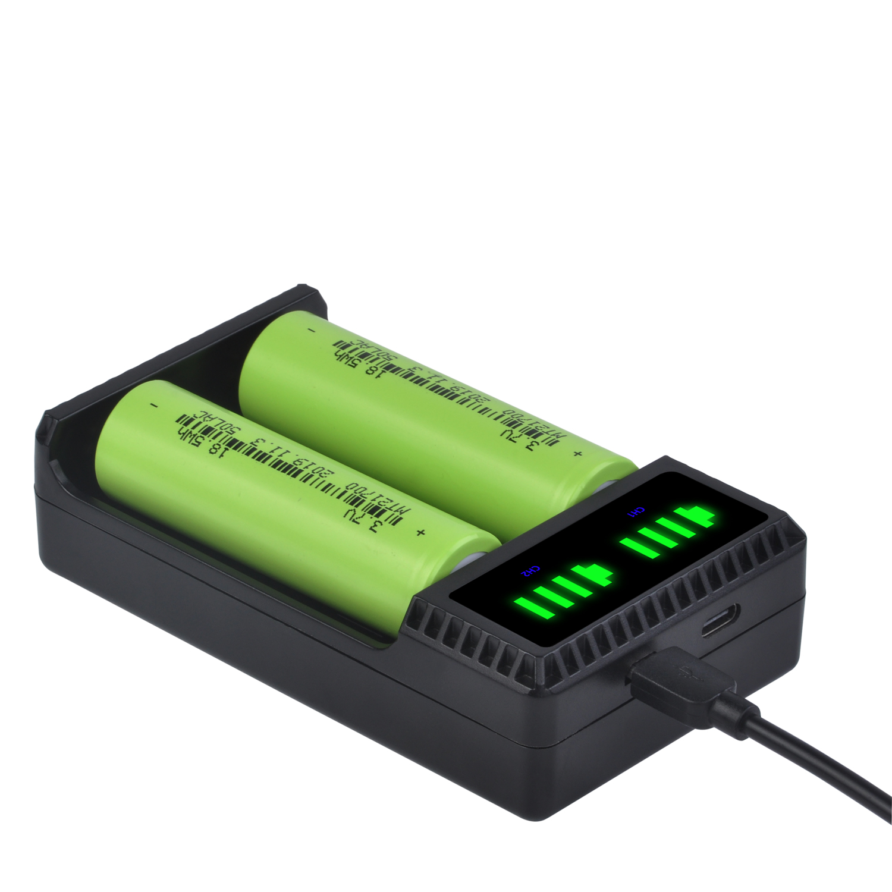
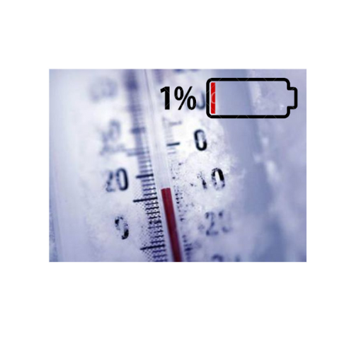
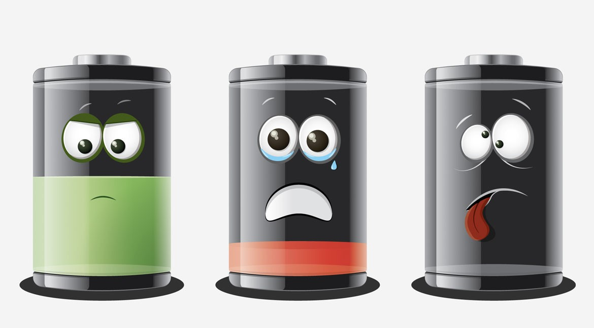
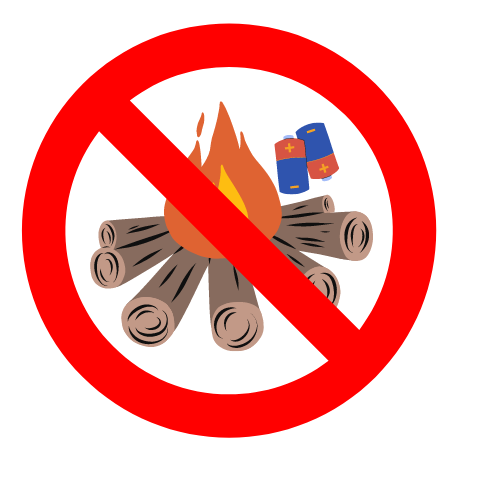
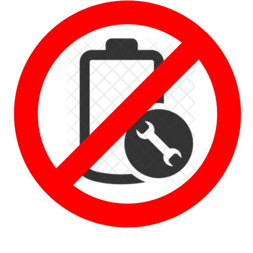
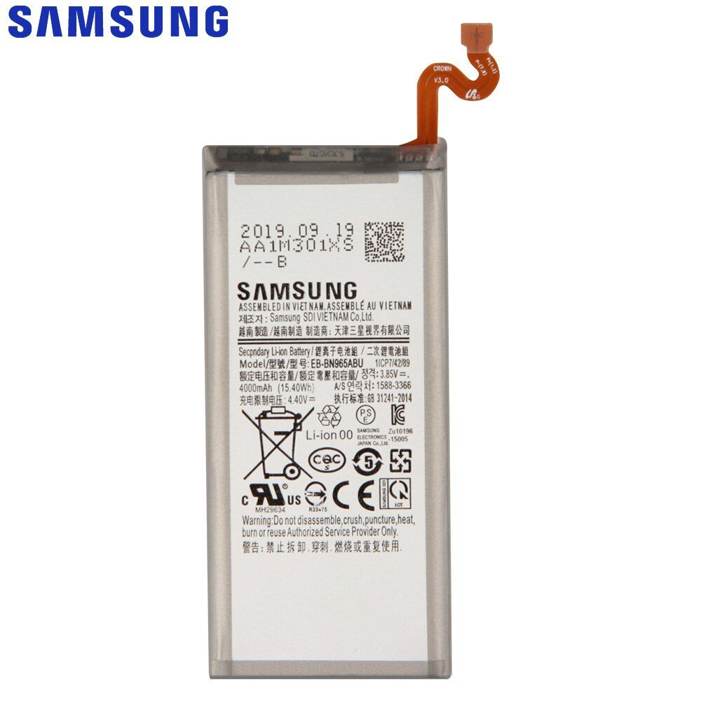
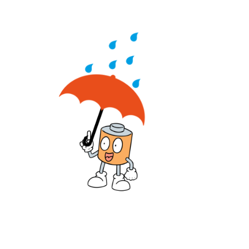
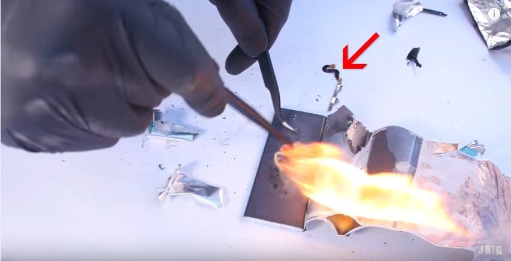
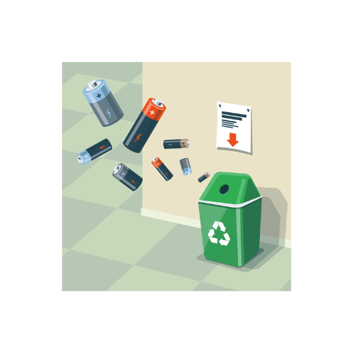

Reguli și argumente
Regula 1

Încărcați bateriile numai cu încărcătoare recomandate de producător!
Argument: O baterie utilizată incorect poate duce la
incendii.
Regula 2

Nu expuneți bateriile la temeraturi extreme cum ar fi căldura sau frigul!
Argument: Pot crea arsuri și intoxicații organismelor vii
lăsând răni incurabile.
Regula 3

Descărcarea și încărcarea frecventă a bateriei poate afecta durata de viață a bateriei!
Argument: Viața limitată a bateriilor, ceea ce înseamnă
că bateriile trebuie să fie înlocuite frecvent.
Regula 4

Nu aruncați bateria în foc deoarece poate exploda!
Argument: Unele substanțe care alcătuiesc conținutul
bateriei, pot exploda la contactul cu aerul și
apa.
Regula 5

Nu încercați să reparați și să deschideți o baterie acasă!
Argument: Distrugerea ecosistemelor deoarece pentru
producerea bateriilor este nevoie de materiale
rar găsite.
Regula 6

Citiți cu atenție instrucțiunile furnizate de producător!
Argument: Poluarea mediului înconjurător datorită
plumbului, litiului, cadmiul, mercurul, etc.
Regula 7

Păstrați bateriile la loc uscat!
Argument: Bateriile au un proces de oxidare prin care
metalele sunt eliberate în sol, pătruzînd în
pînza freatică şi într-un final în apa potabilă.
Regula 8

Dacă bateria are umflături sau
scurgeri, îndepărtați-o la un loc sigur și
înlocuițio!
Argument: O singură baterie poate polua 10 metri
pătrați timp de mai mulți ani.
Regula 9

Nu aruncați bateriile la coș ci le duceți-
le la un furnizor de colectare a
bateriilor!
Argument: La colectarea a cel puțin 2000 de baterii se
poate de reciclat aprox. 280kg de fier care
mai apoi foate fi reutilizat.